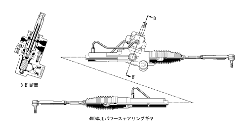

| Steering gear |
| ● |
A dedicated steering gear has been set for a 4WD car.In order to realize the outbreak at the time of stop, the excellent handling at a slight low speed, and the response in the medium and high -speed range, we optimize the torsion barbane constant for a 4WD car.
|
| ● |
The steering gear for 4WD cars does not have a non -adjusted rack guide used for 2WD vehicles.
|
|  |
 Steering gear specification (4WD car) Steering gear specification (4WD car)
|
 Unadjusted rack guide Unadjusted rack guide
|

| Installation of steering gear
|